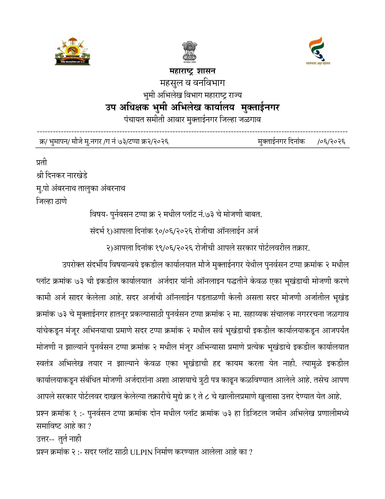
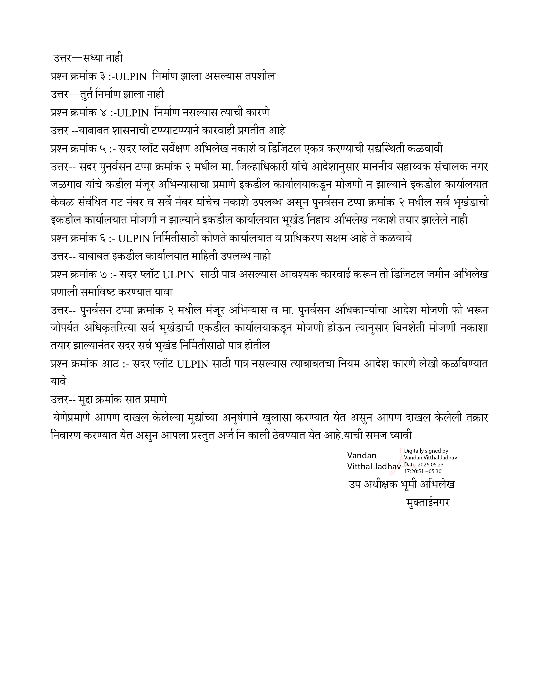

उप अधीक्षक भूमी अभिलेख कार्यालय, मुक्ताईनगर यांनी दिनकर रामभाऊ नारखेडे यांच्या ऑनलाइन अर्ज (दि. १०/०६/२०२६) व आपले सरकार तक्रार (दि. १९/०६/२०२६) यांना उत्तर देताना अधिकृत पत्रात खालील महत्त्वाच्या गोष्टी मान्य केल्या —
The Deputy Superintendent Land Records Office, Muktainagar, in response to Dinkar Rambhau Narkhede's online application (10/06/2026) and Aaple Sarkar complaint (19/06/2026), officially admitted the following in writing —


क्र. भूमापन/मौजे मु.नगर/ग नं ७३/टप्पा क्र२/२०२६ · उप अधीक्षक भूमी अभिलेख, मुक्ताईनगर · दि. २३/०६/२०२६
Ref: भूमापन/मौजे मु.नगर/ग नं ७३/टप्पा क्र२/२०२६ · Dy. Superintendent Land Records, Muktainagar · Dt. 23/06/2026
प्रश्न १: पुनर्वसन टप्पा २, प्लॉट क्र. ७३ डिजिटल जमीन अभिलेख प्रणालीमध्ये समाविष्ट आहे का?
Q1: Is Punarvasan Tappa 2, Plot No. 73 included in the Digital Land Records system?
उत्तर: तूर्त नाहीAnswer: Not at present
प्रश्न २: सदर प्लॉटसाठी ULPIN निर्माण करण्यात आलेले आहे का?
Q2: Has ULPIN been created for this plot?
उत्तर: सध्या नाहीAnswer: Not yet
प्रश्न ३: ULPIN निर्माण झाला असल्यास तपशील?
Q3: If ULPIN created, provide details?
उत्तर: तूर्त निर्माण झाला नाहीAnswer: Not created at present
प्रश्न ४: ULPIN निर्माण नसल्यास कारण?
Q4: If ULPIN not created, reason?
उत्तर: यावाबत शासनाची टप्प्याटप्प्याने कारवाही प्रगतीतAnswer: Government action is in progress in phases
प्रश्न ५: सदर प्लॉट सर्वेक्षण अभिलेख नकाशे व डिजिटल एकत्र करण्याची सद्यस्थिती?
Q5: Current status of survey records and digital integration?
उत्तर: जिल्हाधिकारी आदेशानुसार सर्व भूखंडांची एकत्र मोजणी आवश्यक — एकट्या भूखंडाची हद्द ठरवता येत नाही. त्यामुळे नकाशे तयार झाले नाहीत.Answer: As per Collector's order, collective survey of all plots is necessary — individual plot boundary cannot be fixed. Hence maps not prepared.
प्रश्न ६: ULPIN निर्मितीसाठी कोणते कार्यालय व प्राधिकरण सक्षम आहे?
Q6: Which office/authority is competent for ULPIN creation?
उत्तर: याबाबत इकडील कार्यालयात माहिती उपलब्ध नाहीAnswer: Information not available at this office
प्रश्न ७: ULPIN साठी पात्र असल्यास आवश्यक कारवाई करून डिजिटल जमीन अभिलेख प्रणाली समाविष्ट करण्यात यावे.
Q7: If eligible for ULPIN, take necessary action and include in digital records.
उत्तर: पुनर्वसन टप्पा २ मधील सर्व भूखंडांची एकत्र मोजणी झाल्यानंतरच ULPIN शक्य.Answer: ULPIN possible only after collective survey of all plots in Punarvasan Tappa 2.
प्रश्न ८: ULPIN साठी पात्र नसल्यास त्याबाबतचा नियम आदेश कारणे लेखी कळवण्यात यावे.
Q8: If not eligible for ULPIN, provide reasons in writing.
उत्तर: मुद्दा क्रमांक ७ प्रमाणे — तक्रार निवारण होत नाही. तक्रार अर्ज काळी टाकण्यात येत आहे.Answer: As per point 7 — grievance cannot be resolved. Complaint application is being set aside.